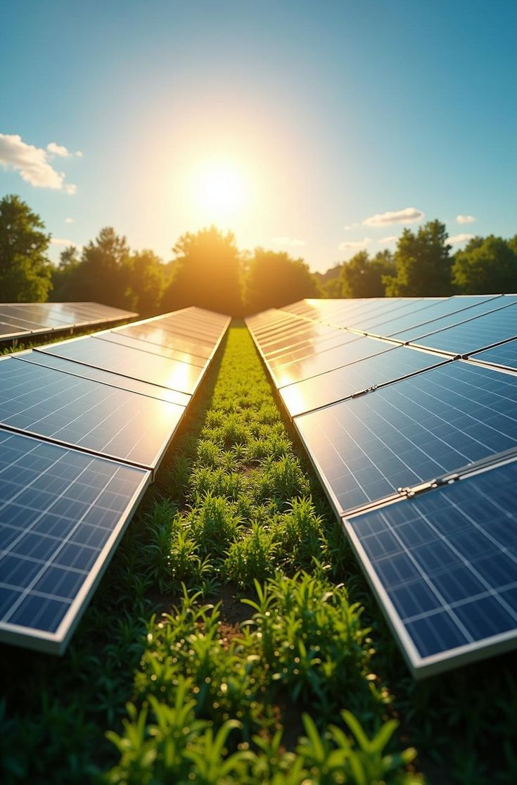
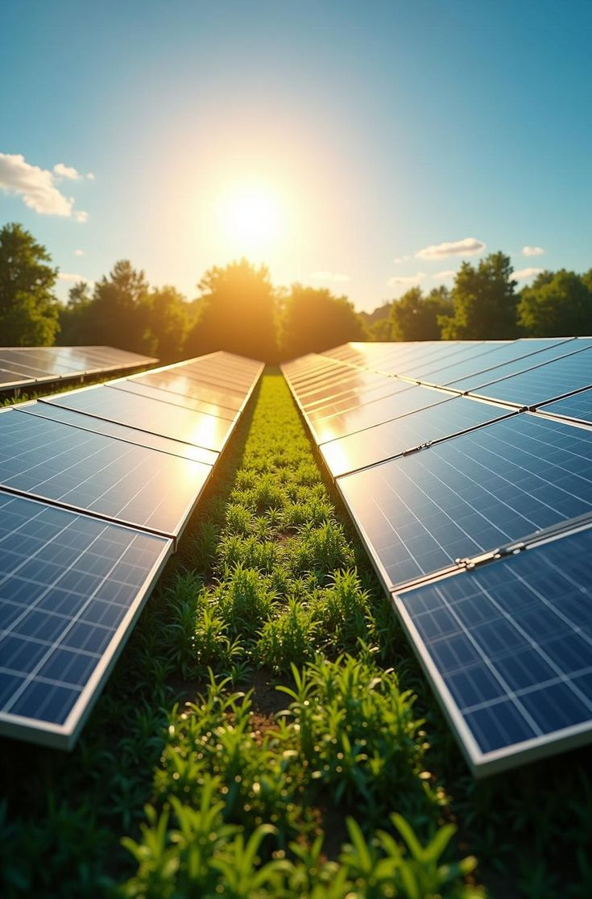

Veja as Tecnologias, e metodos
O futuro da agricultura em imagens Veja como a tecnologia está transformando o campo! Descubra máquinas autônomas em ação, sensores de última geração e drones monitorando plantações.
 

Veja mais informações no nosso Blog
Inovação no Agronegócio A cada dia, novas tecnologias ajudam produtores a aumentar sua produtividade e preservar o meio ambiente. Acompanhe as novidades e tendências do setor!
O impacto dos drones na agricultura Como pequenas aeronaves estão revolucionando o monitoramento e aplicação de insumos nas lavouras.
Máquinas inteligentes: menos custos e mais eficiência A automação agrícola chegou para ficar. Veja como novas máquinas estão mudando o campo.
Contate-nos
Fale conosco! Tem dúvidas ou sugestões? Entre em contato e participe da revolução agrícola!